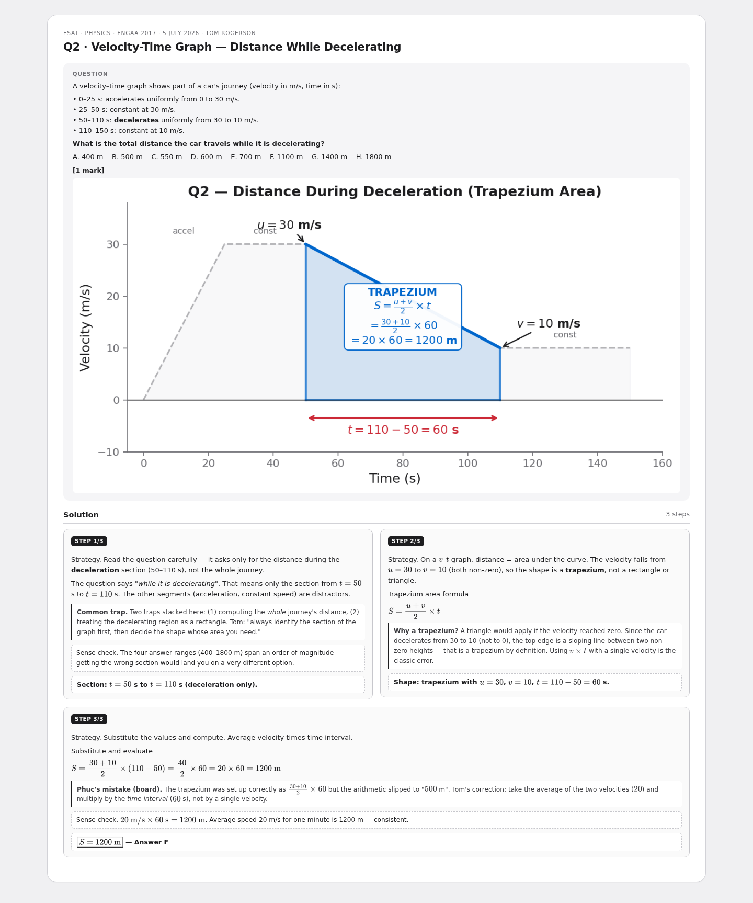
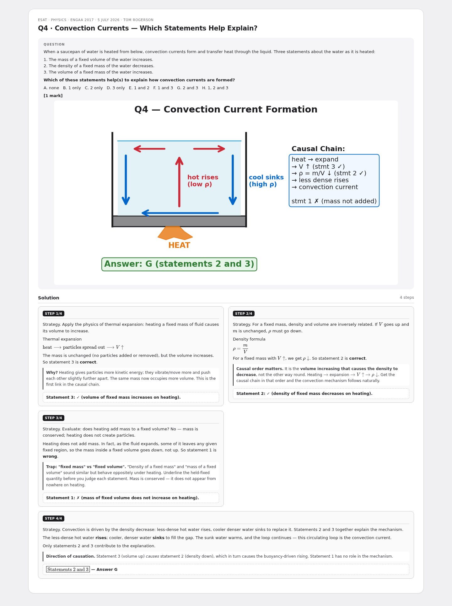
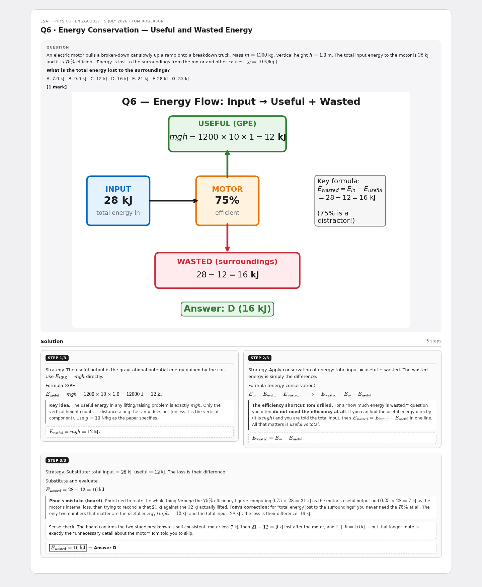
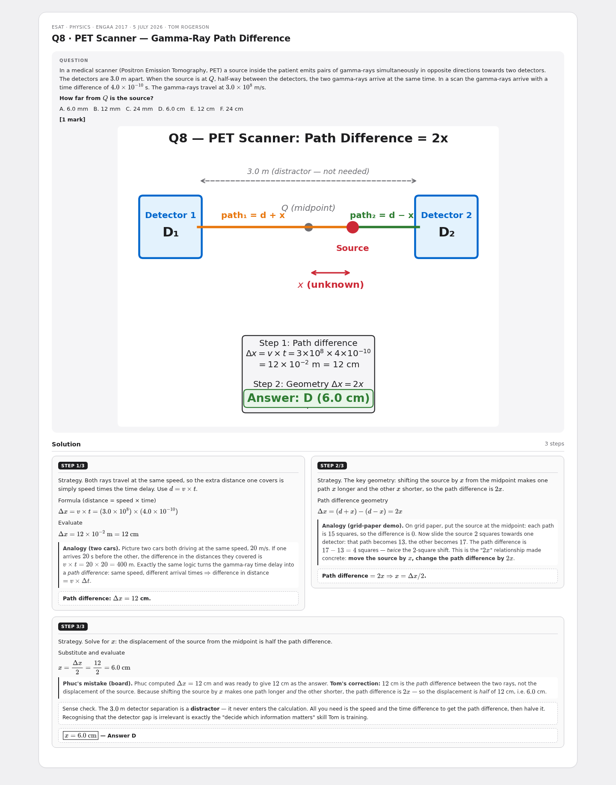
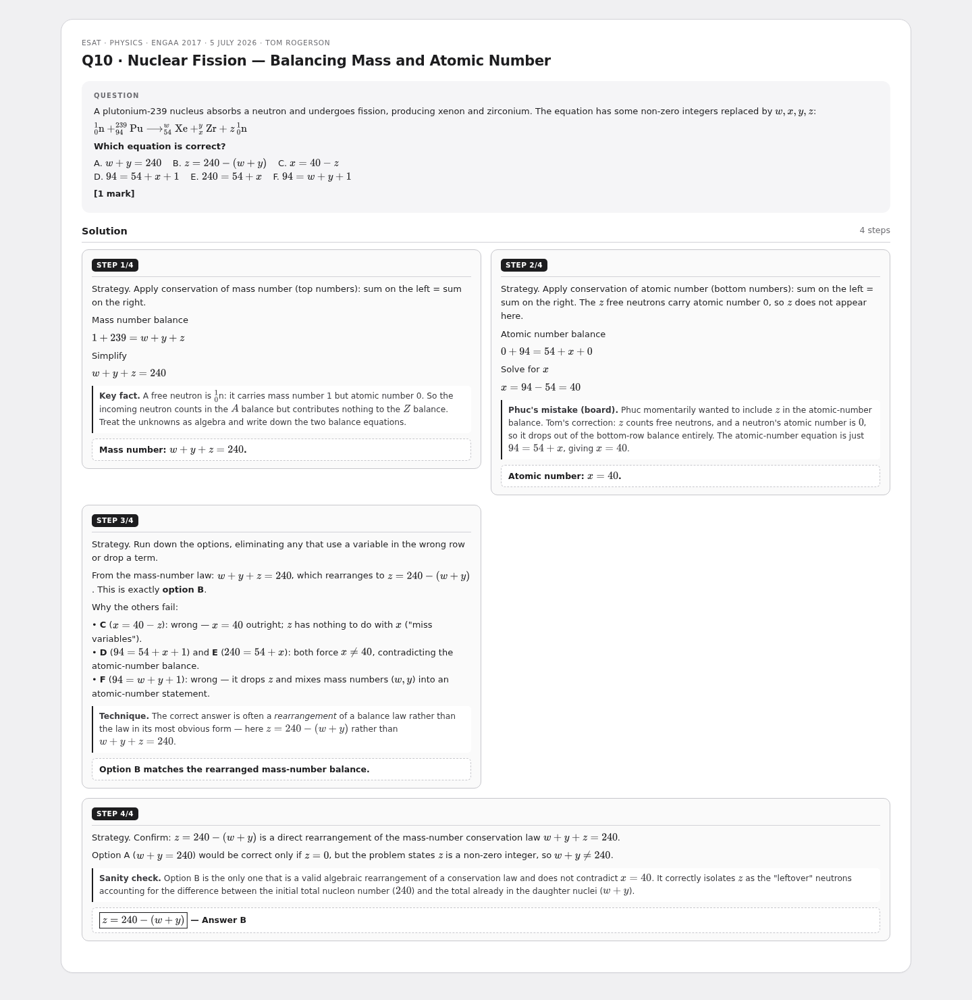
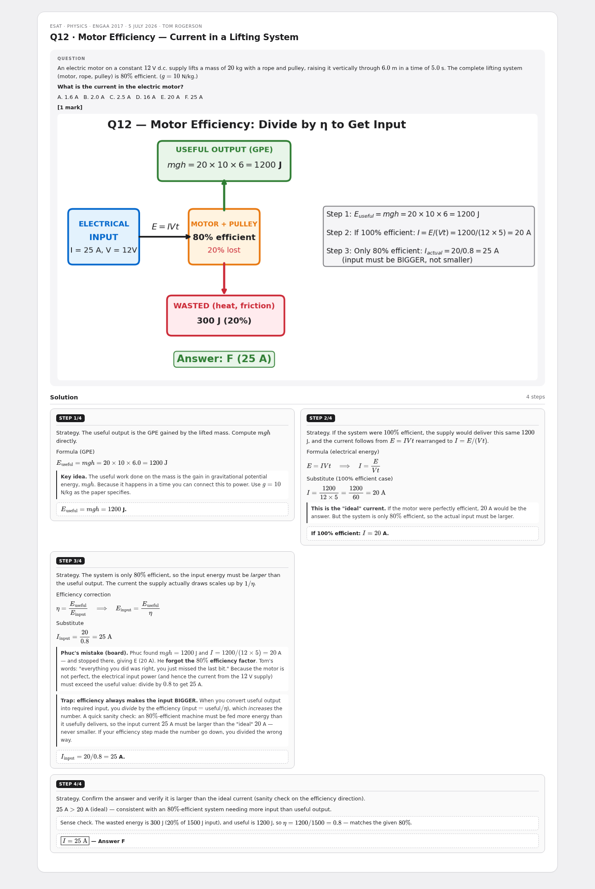
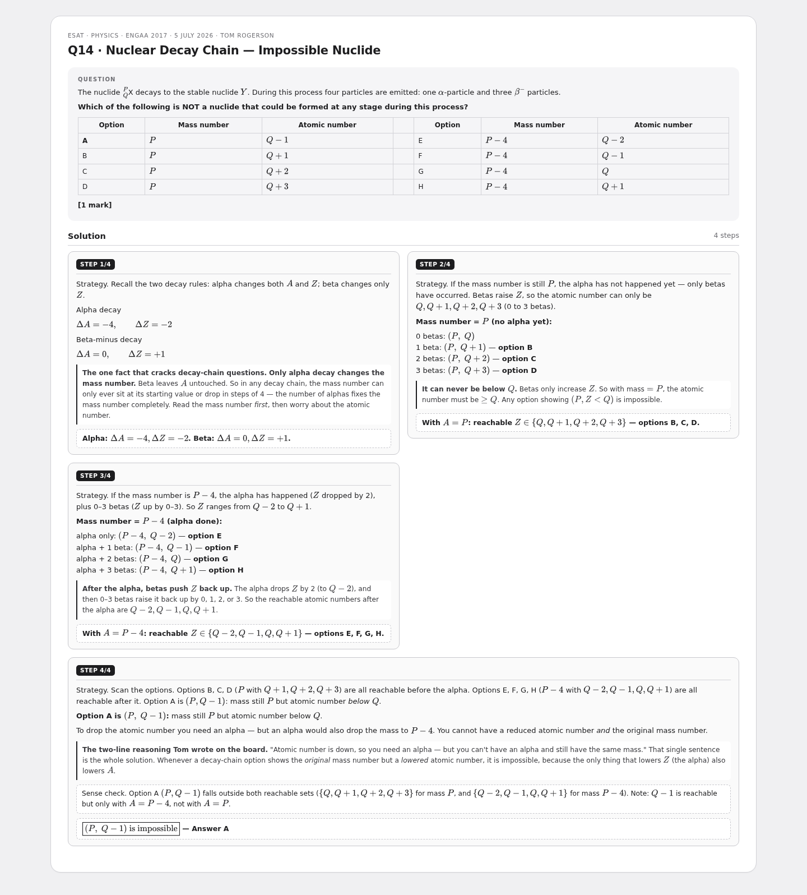

ENGAA 2017 Physics — Multi-step cards
7 cardsENGAA 2017Multi-step
6 cardsS1Multi-step
Q2 · Velocity-Time Graph — Distance While Decelerating

Q4 · Convection Currents — Which Statements Help Explain?

Q6 · Energy Conservation — Useful and Wasted Energy

Q8 · PET Scanner — Gamma-Ray Path Difference

Q10 · Nuclear Fission — Balancing Mass and Atomic Number

Q12 · Motor Efficiency — Current in a Lifting System

Q14 · Nuclear Decay Chain — Impossible Nuclide
